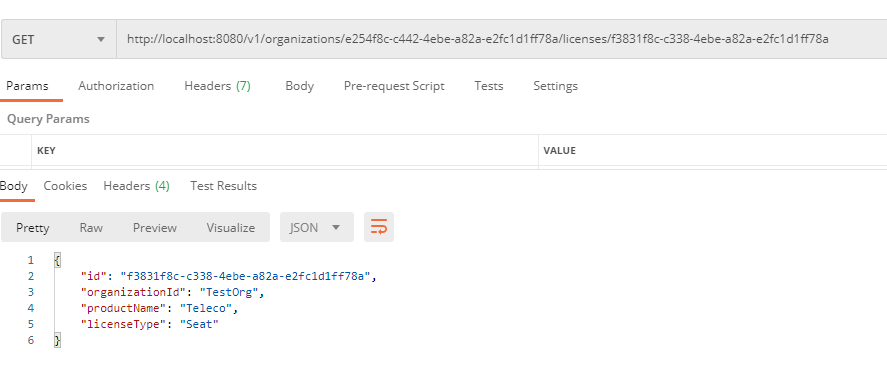

Spingboot构建微服务
传统瀑布方法特征
紧耦合的
有漏洞的
单体的
微服务架构特征
有约束的
松耦合的
抽象的
独立的
基于云的应用程序特征
拥有庞大而多样化的用户群
极高的运行时间要求
不均匀的容量需求
微服务开发的三个角色
架构师——设计微服务架构
软件开发人员——
DevOps工程师——
设计微服务架构
（1）分解业务问题
（2）建立服务粒度
（3）定义服务接口
分解业务问题
一个事务可能包含跨业务领域的一组微服务
分离业务领域的指导方针
（1）描述业务问题，并聆听描述问题的名词
（2）注意动词
（3）寻找数据内聚
建立服务粒度
将功能部件提取完全独立的单元中
不只重新打包代码，还要单独梳理实际数据库表，只允许每个单独的服务访问其特定域的表
建立服务粒度的思想：
（1）开始时让微服务涉及范围广一些，然后将其重构到更小的服务
（2）重点关注服务如何交互
（3）随着对问题域理解的不断增长，服务的职责将随着时间的推移而改变
粒度过粗过细都会有问题
定义服务接口
指导方针
（1）拥抱REST的理念
（2）使用URI穿搭意图
（3）请求和响应使用JSON
（4）使用HTTP状态码传达结果
不应该使用微服务的场景
构建分布式系统的复杂性
服务器散乱
应用程序类型
数据事务和一致性
用SpringBoot和Java构建微服务
两个类：
1.Spring引导类，启动和初始化应用
2.Spring控制器类，公开可以被微服务调用的HTTP端点
编写引导类
1 |
|
1 | JavaBean的定义 |
SpringBoot控制器
1 | 遵循REST |
1 | //基于REST的服务，自动序列化/反序列化服务请求响应到JSON，包含了ResponseBody注解 |
JSON：轻量级序列化协议，是JS默认的，天然适用REST的应用程序
1 |
|
1 | @RequestMapping用于绑定Controller中的方法，传入value和method两个参数 |
POSTMAN测试得到JSON返回值

构建运行时的严谨性
1 | ■ 服务装配 |
Spingboot构建微服务